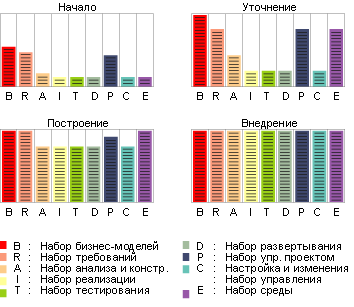

| Концепция: Итерация |
 |
|
| Связанные элементы |
|---|
Что такое итерация?Итерация представляет собой совокупность операций, в результате которой создаются выпуск продукта: стабильная исполняемая версия вместе со вспомогательными элементами, необходимыми для работы с ним. Таким образом, итерацию можно рассматривать в качестве одного полного прохода по всем дисциплинам, как минимум, включая управление требованиями, анализ и проектирование, реализация и тестирование. Итерацию можно сравнить с небольшим проектом водопадной модели. Обратите внимание на то, что критерии оценки устанавливаются отдельно для каждой итерации при ее планировании. У выпуска будет запланированный набор функций, который можно будет продемонстрировать. Продолжительность итерации зависит от масштабов и характера проекта, но в большинстве случаев в каждой итерации выполняется несколько компиляций продукта, согласно плану компоновки интеграции для конкретной итерации. Такой подход - следствие применение принципа непрерывной интеграции, рекомендованного в Rational Unified Process (RUP): по мере готовности автономно тестируемые компоненты интегрируются в систему, а затем система компонуется и тестируется на предмет правильности интеграции. При таком подходе набор функций интегрированного продукта расширяется по мере выполнения итерации и постепенно приближается к задачам, поставленным на этапе планирования итерации. Каждую компиляцию можно считать миниатюрной итерацией за той лишь разницей, что итерации требуют другого планирования и формальной оценки результатов. В некоторых проектах целесообразно компилировать продукт каждый день, однако такие компиляции нельзя назвать итерациями в определении RUP, если только это не миниатюрный проект, выполняемый одним программистом. Даже в малых проектах, над которыми работают несколько разработчиков (например, 5 программистов пишут 10000 строк кода), очень сложно реализовать итерации длительностью менее недели. Причины этого изложены в разделе Рекомендация: план разработки программного обеспечения. Зачем нужны итерации?Раньше большинство проектов сводилось к однократному последовательному выполнению всех предусмотренных дисциплин. Такой жизненный цикл называется водопадным:
Для такого подхода характерно накапливание огромного количества недоработок в сфере интеграции к концу цикла реализации, когда продукт впервые компилируется и начинается его тестирование. Всплывают ошибки, не замеченные на этапах анализа, проектирования и реализации, и проект практически останавливается на длительное время, в течение которого будут исправляться ошибки. Более гибкий и менее рискованный подход к разработке заключается в многократном выполнении различных дисциплин для лучшего понимания требований, проектирования надежной архитектуры, оптимизации процесса разработки и проведения нескольких циклов реализации, в ходе которых продукт становится все более и более завершенным. Такой жизненный цикл называется итерационным. Однократное выполнение последовательности дисциплин процесса называется итерацией.
С точки зрения разработчика такой жизненный цикл представляет собой последовательность итераций, в ходе которых постепенно разрабатывается программное обеспечение. Каждая итерация заканчивается выпуском исполняемого продукта. Выпуск может поддерживать не все функции конечной системы, но при этом служит полезным источником информации для разработчиков и пользователей. Вместе с каждым выпуском создаются сопутствующие продукты работы: описание выпуска, документация, планы и т.п., а также обновленные модели системы. Главный результат применения итерационного подхода заключается в развитии и созревании описанных ранее продуктов работы, как показано на следующей диаграмме.  Эволюция информационного наполнения на различных этапах разработки. Малая вехаКаждая итерация завершается малой вехой, в которой проверяется соответствие результата выполнения итерации критериям оценки, установленным для данной конкретной итерации. |

© Copyright IBM Corp. 1987, 2005 Все права защищены |